1. 주피터 노트북이란?
일반적인 파이썬 파일은 위에서 아래로 한 번에 실행되는 경우가 많습니다. 반면 주피터 노트북은 코드를 작은 단위인 셀(Cell)로 나누어 실행합니다. 그래서 초보자가 중간 결과를 확인하면서 학습하기 좋습니다.
2. 주피터 노트북 실행하기
PPT에서는 시작 메뉴의 Anaconda3 폴더에서 Jupyter Notebook을 실행하는 방법을 안내합니다. 실행하면 웹 브라우저가 열리고, 현재 작업 폴더의 파일 목록이 표시됩니다.
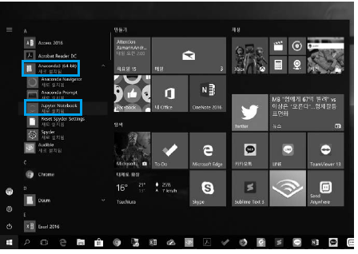
수업에서 권장하는 실행 흐름
- 수업용 프로젝트 폴더를 엽니다.
- 가상환경 또는 Anaconda 환경이 활성화되어 있는지 확인합니다.
- 터미널에서
jupyter notebook또는jupyter lab을 실행합니다. - 브라우저에서 실습 노트북 파일을 열어 코드를 실행합니다.
3. 새 노트북 만들기와 셀 이해하기
작업할 폴더에 들어간 뒤 New → Python 3를 선택하면 새 노트북이 생성됩니다. 새로 열린 화면에서 파란색 또는 초록색 테두리가 있는 입력 공간이 보이는데, 이 공간을 셀이라고 부릅니다.
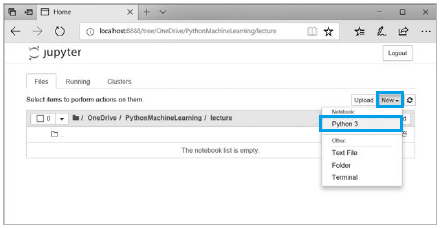
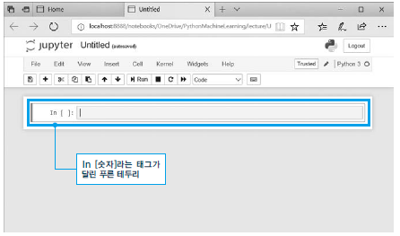
셀을 이해하는 쉬운 비유
셀 하나는 작은 실험 공간입니다. 첫 번째 셀에서는 데이터를 불러오고, 두 번째 셀에서는 데이터를 확인하고, 세 번째 셀에서는 그래프를 그리는 식으로 작업을 나눌 수 있습니다.
4. 코드 실행하기
PPT에서는 셀에 1 / 3을 입력하고 Run 버튼을 클릭하여 결과를 확인하는 예시를 보여줍니다. 실행 결과는 셀 바로 아래에 표시되고, 다음 셀이 자동으로 추가될 수 있습니다.
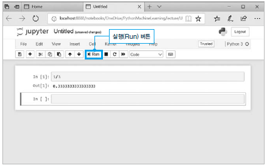
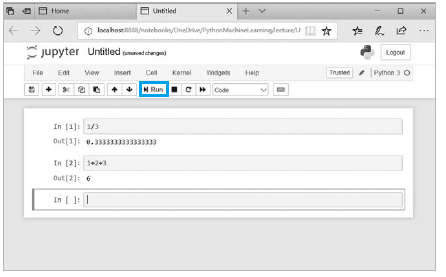
Shift + Enter는 현재 셀을 실행하고 다음 셀로 이동합니다. Ctrl + Enter는 현재 셀만 실행합니다.5. 하나의 셀에 여러 명령문 작성하기
하나의 셀에는 여러 줄의 코드를 작성할 수 있습니다. 데이터 분석에서는 관련 있는 작업을 한 셀에 묶어두면 흐름을 이해하기 쉽습니다.
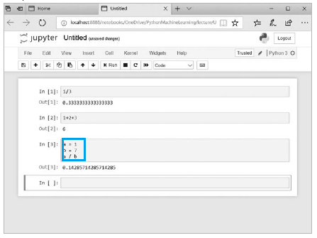
다만 너무 많은 코드를 한 셀에 몰아넣으면 디버깅하기 어렵습니다. 초보자 단계에서는 하나의 셀에는 하나의 작은 목적만 담는 습관이 좋습니다.
6. 명령 모드와 편집 모드
주피터 노트북의 셀에는 두 가지 상태가 있습니다. 편집 모드는 셀 안에 코드를 입력하는 상태이고, 명령 모드는 셀 자체를 추가, 삭제, 복사하는 상태입니다.
| 모드 | 의미 | 초보자 체크 포인트 |
|---|---|---|
| 편집 모드 | 셀 안에 코드를 직접 입력하는 상태 | 셀 안에 커서가 깜빡이면 편집 모드입니다. |
| 명령 모드 | 셀을 추가, 삭제, 이동하는 상태 | 셀 테두리가 선택된 느낌이면 명령 모드입니다. |
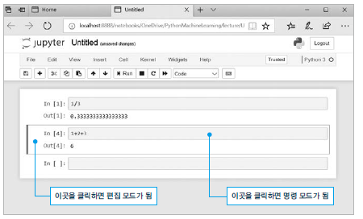
Enter: 선택된 셀을 편집 모드로 전환합니다.Esc: 편집 모드에서 명령 모드로 빠져나옵니다.A: 명령 모드에서 현재 셀 위에 새 셀을 추가합니다.B: 명령 모드에서 현재 셀 아래에 새 셀을 추가합니다.
7. 마크다운 셀로 설명 쓰기
주피터 노트북은 코드뿐 아니라 설명 문장도 함께 작성할 수 있습니다. 우측 상단 드롭다운에서 Code → Markdown으로 바꾸면, 셀에 일반 문장과 제목을 입력할 수 있습니다.
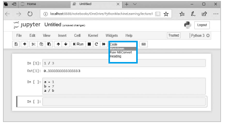
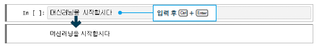
#, ##, ### 기호로 제목 크기를 조절할 수 있습니다.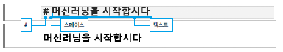
8. 파일명 변경과 저장
새 노트북의 기본 파일명은 보통 Untitled입니다. 파일명을 클릭하여 수업 내용에 맞는 이름으로 바꾸고 저장 버튼을 눌러 보관합니다.
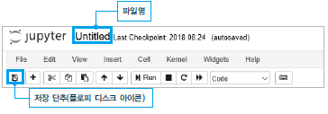
권장 파일명 예시
day1_jupyter_basic.ipynbday1_python_variable_practice.ipynbday1_csv_read_write.ipynb
.ipynb입니다. 이 파일에는 코드, 실행 결과, 마크다운 설명이 함께 저장됩니다.9. 실습 체크리스트
- 주피터 노트북을 실행할 수 있다.
- 새 Python 노트북을 만들 수 있다.
- 코드 셀에 간단한 계산식을 입력하고 실행할 수 있다.
- 명령 모드와 편집 모드를 구분할 수 있다.
- 마크다운 셀에 제목과 설명을 작성할 수 있다.
- 노트북 파일명을 바꾸고 저장할 수 있다.